LHA (Linguist Hidden Archive) – это архив школьных медиа, текстов и новостей, связанной с Лицеем "Лингвист" (или же 12-й школой). Этим архивом никак не управляет руководство лицея, и мы надеемся, что наши материалы не будут нарушать устав лицея или унижать его. К сожалению, этот лицей ценится плохой репутацией и является отсталым в технологиях, но не настолько. Не забывайте, что лицей легко найдёт человека, который сделал пакость, поэтому мы никак не собираемся вредить и/или оскорблять само заведение и его работников.
Мы не собираемся раскрывать, кто именно стоит за этим архивом, но мы можем сказать, что это группа из 1 человека, который пытается пополнять нашу библиотеку. Скорее всего, при раскрытии создателя архив будет закрыт или поменяет своё название или ссылку. На данный момент лицей не знает о существовании этой "платформы", и даже если узнают, то они ничего не смогут предъявить. Информация подаётся исключительно на русском и украинском языках.
Идея пришла ко мне в 2025 году, когда я по приколу начал вещать запись с VHS-фильтром на телик класса, где я просто хожу по туалету и убегаю. Это было на уроке, учитель не видел телевизор. Во время показа один из одноклассников спросил: "Какой это архив?", и тогда до меня дошло... Я решил реально создать шуточный архив, написанный ИИ, чтобы показать... Ай, да ничего не показать, по приколу. В то время были актуальны аналоговые хорроры, поэтому я решил сделать типа организацию, которая занимается охотой на всякую нечисть. Второе видео (после туалета) гласило: в школьном подвале убили человека, это не был человек, а какой-то объект "Туман", всё было оформлено в VHS-формате на синем фоне. Мне эта тема залетела. Потом я сделал фотку, на которой "типа «туман»", и его засняли в коридоре ночью. Дальше я забил на LHA. Кстати, уже тогда для LHA был логотип и расшифровка, и уже тогда был концепт независимости от руководства лицея.
В 2026 году я решил возобновить LHA, но уже в более "реальной" форме. Я увидел на дне рождения моего одноклассника, что у одного из них порвались штаны. Зная меня, я бы это просто так не пропустил и выложил на бесплатный хостинг. Кстати, а вы замечали ling внизу страницы? Это было сделано для того, чтобы подсказать пароль для этих фоток. Не забуду сказать ещё про то, что файлы были превращены в txt-формат, чтобы GitHub не закрыл репозиторий. Сейчас, если вы видите на главной странице "Жопа Дениса", то вам покажет страницу, которая оповещает вас, что содержание удалено и инфа об удалении будет удалена в конкретную дату (в случае с Денисом — 1 мая). Не считая произошедшего на дне рождения, я ещё решил хранить удалённые сообщения из нашей классной группы, но сразу отказался.
Гулял я, значит, по парку и думаю: "А почему бы на LHA не постить новости?", и да, я буду публиковать рукописные сайты с новостями на двух языках (включая этот сайт).
На данный момент, LHA - это просто архив, который я поддерживаю, и я не знаю, что будет дальше. Я не исключаю возможности закрытия архива, но я не исключаю возможности его развития. Я не исключаю возможности создания новых сайтов, которые будут связаны с LHA, но я не исключаю возможности их отсутствия. Я не исключаю возможности публикации новых материалов, но я не исключаю возможности их отсутствия. В общем, буду делать всё по приколу и по настроению.